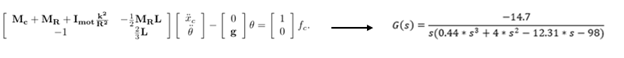
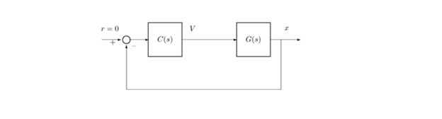
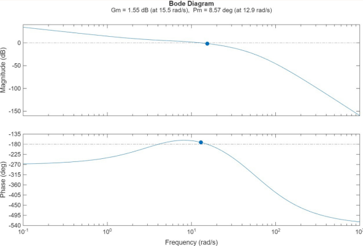
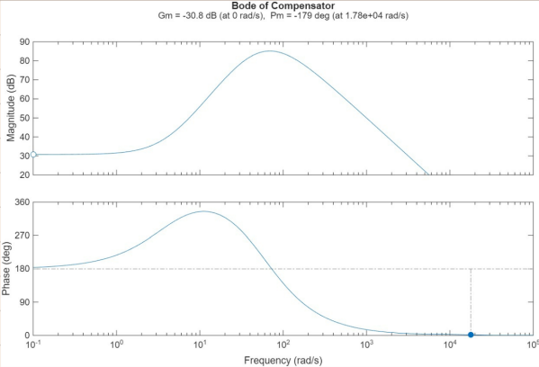
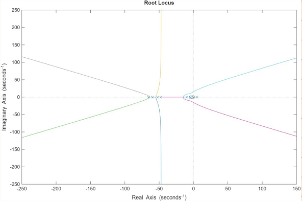
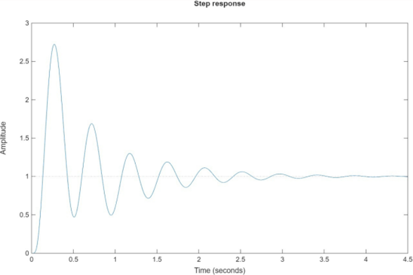
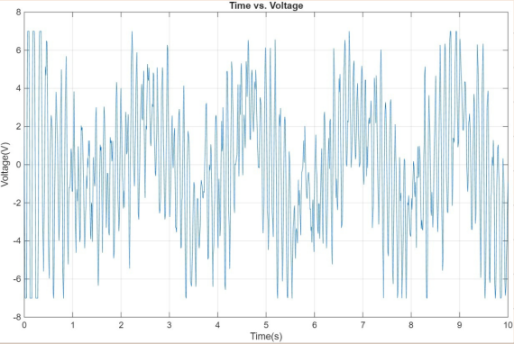
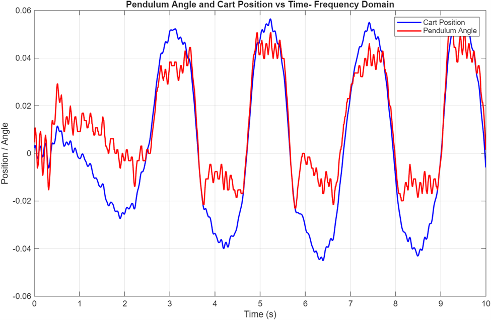

Inverted Pendulum Controller Design (Frequency domain)
Designed and implemented frequency domain controller
for inverted pendulum system.
Problem Statement
The goal of this project was to design a feedback controller in frequency domain to stabilize an inverted pendulum mounted on a motorized cart, an inherently unstable system. The controller must maintain the pendulum in the upright position through the horizontal movement of the cart. Additionally, the system should remain stable and maintain upright position under mild external disturbances.
Approach
- Started with the linearized inverted pendulum model provided and converted it into a transfer function suitable for the frequency domain analysis. 
- Used MATLAB SISO Design Tool to design a frequency domain controller ensuring the system met the stability requirements
- Tuned controller parameter iteratively in the SISO tool to achieve desired performance requirements by achieving phase margin of ≥ 45°, settling time < 2 s, and overshoot < 10%
- Implemented the designed controller on the lab setup to validate performance verifying that pendulum maintained performance in the presence of disturbances. 
Results
Analytical Response
-
Open-Loop Bode Plot:
The system exhibits a phase margin of ~8.57° and a gain margin of 1.55 dB at the phase crossover frequency, indicating stability and that gain reduction would lead to instability.

-
Controller Bode Plot:
The plant G(s) has negative sign (negative gain). To make overall loop act as a standard negative feedback system, controller gain had to be negative so that loop transfer function L(s) becomes positive.

Stability and Performance
-
Root Locus:
Controller stabilize the RHP pole of the system confirming the stability of the system. (system stays in RHP for low gains)

-
Step Response:
The system demonstrates rise time ~1 s, settling time ~3 s, successfully meeting all specified design requirements.

System Response
-
Time vs Voltage:
The control input peaks at ±8 V, remaining within safe operating limits to prevent motor surges while effectively stabilizing the pendulum.

-
Time vs Position & Time vs Angle:
The pendulum stabilizes within approximately 3 s, while the cart displacement remains within ±0.06 m. The system can handle angle disturbances up to ~5°, confirming that it meets the specified performance requirements.

Time vs Frequency Domain Controller Design

| Metric | Frequency-Domain | Time-Domain |
|---|---|---|
| Phase Margin | 8.57° | 7.90° |
| Gain Margin | 1.55 dB | 1.45 dB |
| Overshoot | 7% | 8% |
| Settling Time | 1.5 s | 1.6 s |
Time domain controller include observer dynamics which include extra high frequency poles and additional phase lag reducing bandwidth but increasing robustness.
Learnings
- Learned to use MATLAB SISO Tool to design and tune controllers for the inverted pendulum system.
- Learned to design controllers in the frequency domain, for given performance criteria.
- Learned to analyze system performance using Bode, root locus, step response plots.
- Learned to balance stability and performance, handling disturbances while meeting design specifications.
Tools Used : MATLAB SISO Design Tool